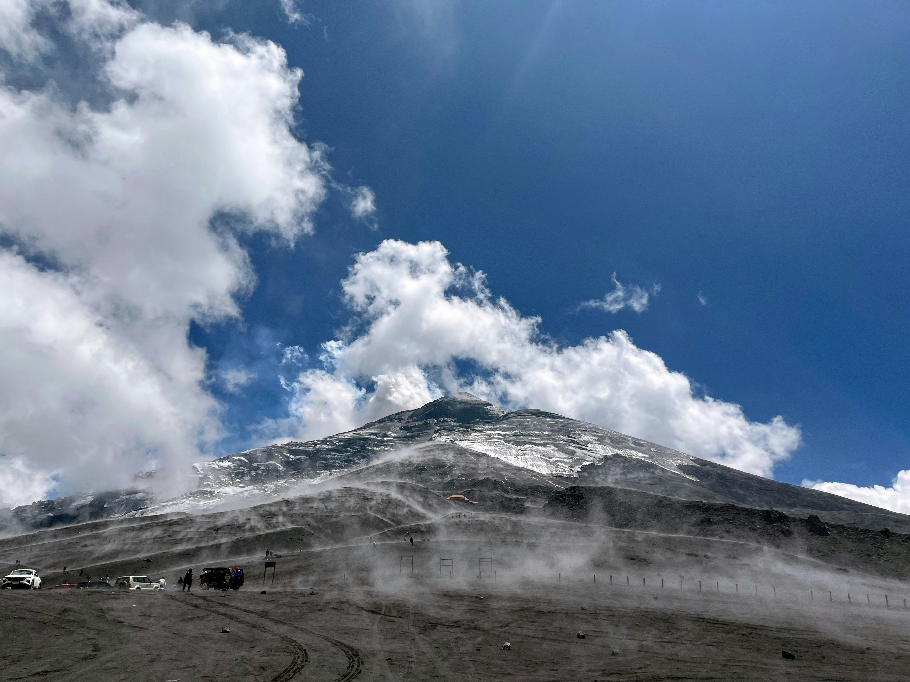

Explore the Island!
Most people visit Taniti to enjoy the beaches, explore the rainforest, and to visit the volcano.
Beach
Taniti City & Yellow Leaf Bay
White, sandy beaches that encircle Yellow Leaf Bay can be accessed nearby Taniti City.
Snorkling
Snorkling is another fun way to boost the island experience!

"Sunrise on a Beach"[1]
Rainforest
Tours
Boat, bus, hiking, and helicopter rides are popular tour options to experience the rainforest.
Chartered fishing tours are also offered.
Ziplining
Enjoy Ziplining through Taniti's rainforest!

"Ziplining through the rainforest."[2]
Volcano
Visiting Taniti's active volcano is another popular activity enjoyed by tourists.
Tours are offered to reach this destination, but tourists can also enjoy this sight by using their favorite form of land travel.

"Tourists visiting an active volcano."[3]